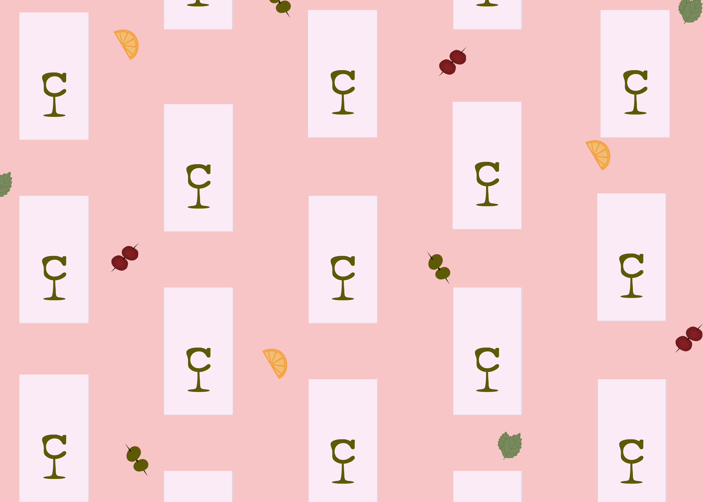
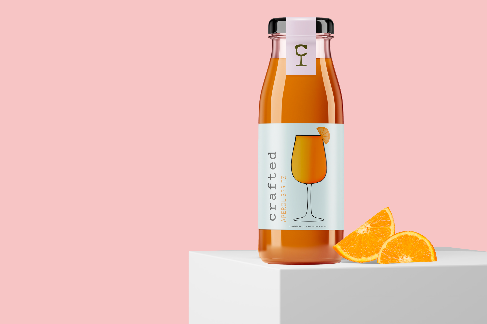
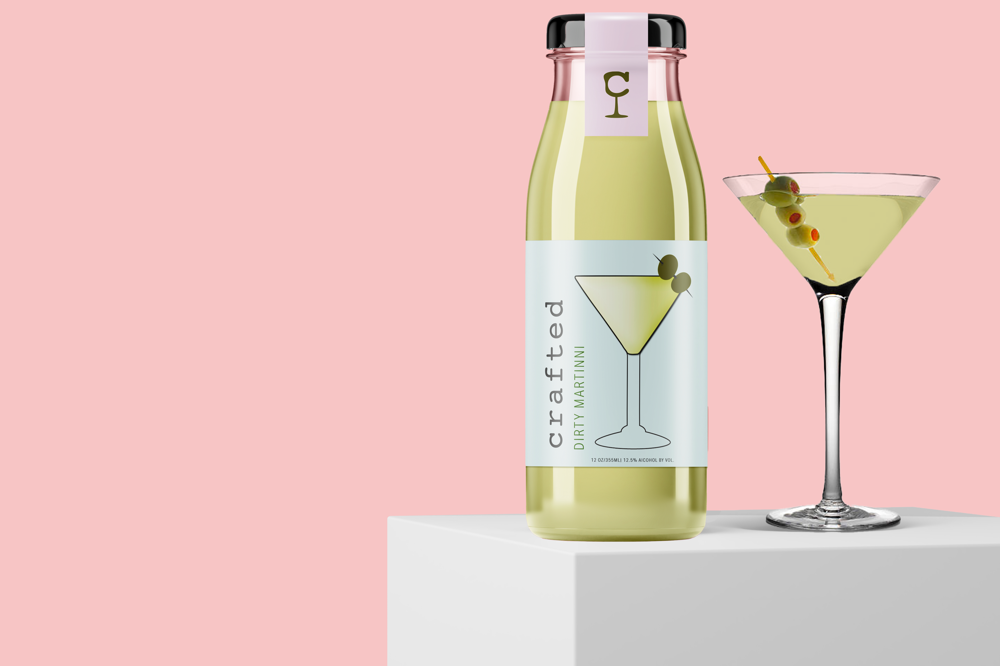
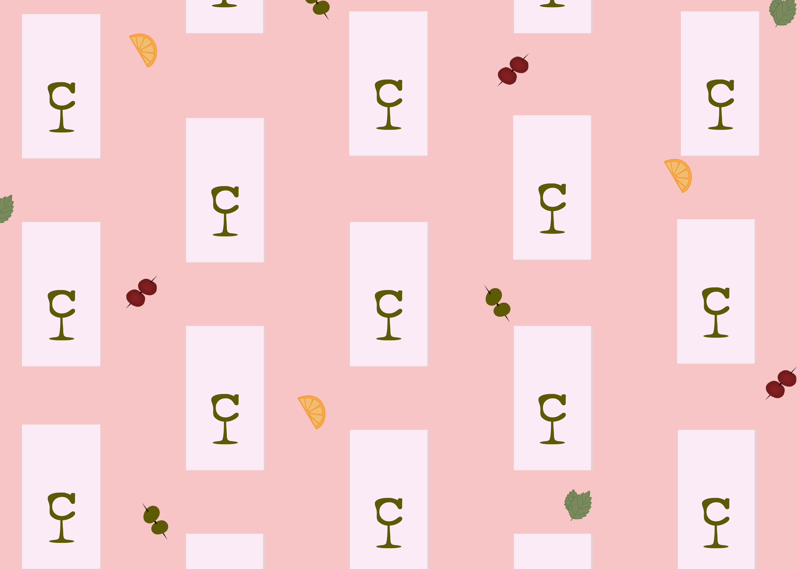
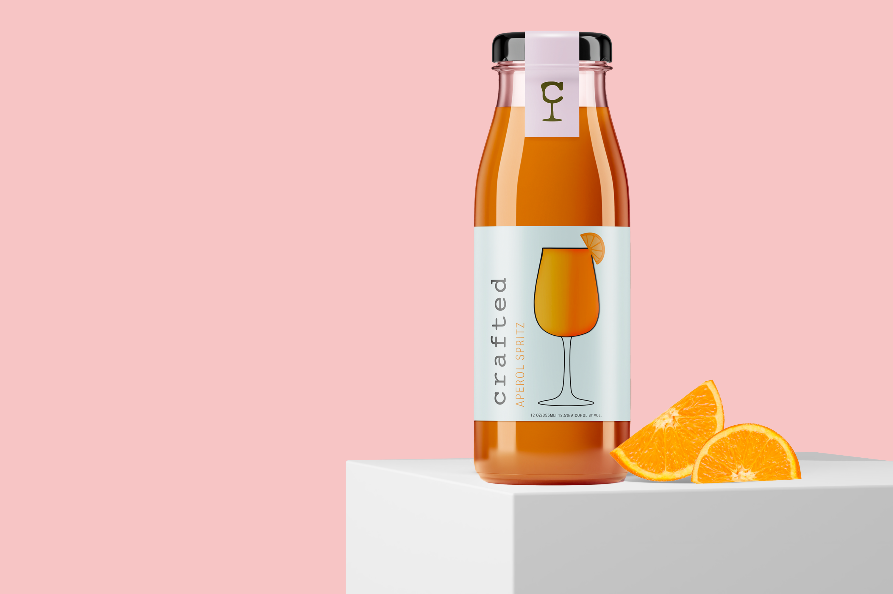
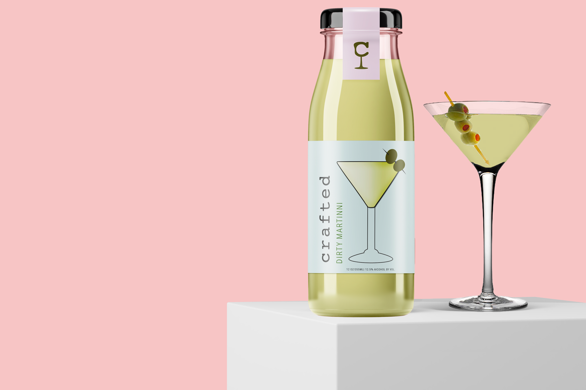

Crafted Brand Identity and Packaging
I created a brand identity and packaging for a fictional ready-to-drink cocktail company called "Crafted." I made 4 classic cocktails and incorporated their styles into the packaging. The label uses a see-through window in the outline of each glass to show the product inside. The logo comprises the "C" from the crafted name and incorporates a cocktail glass stem to fit with the labels. The color palette is made up of the different garnishes each cocktail uses. The fonts used are Courier Regular and Aktiv Grotesk CD Light. This simple yet innovative design pairs perfectly with the nature of ready-to-drink cocktails.
 




